十大雅集 / 侠趣天成
VI
侠趣天成
传统体育、游艺与杂技
收录国家级代表性项目 109 项、166 子项，申报地区涉及 29 个省级行政区，另有中直单位申报的 2 子项。子项最多的地区：河北省（24）、山东省（15）、北京市（12）。
项目档案库
109 项、166 子项
（本页配图如无特别标注，均为 AI 生成的示意图，非实拍。）
第 2 / 2 页（VI-61 至 VI-109）
- VI-61
肘捶
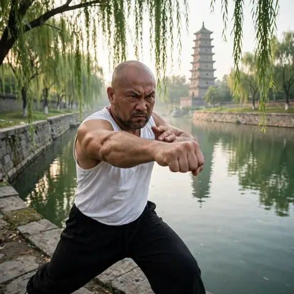
- 山东省临清市2011 第三批 · 新增项目官方页 →
- VI-62
十八般武艺
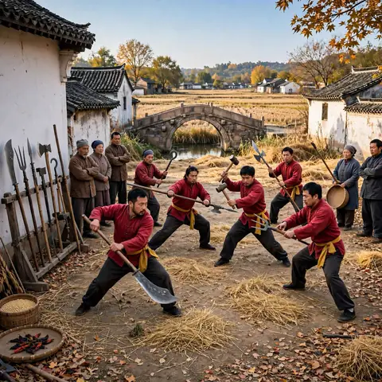
- 浙江省杭州市余杭区2011 第三批 · 新增项目官方页 →
- VI-63
华佗五禽戏
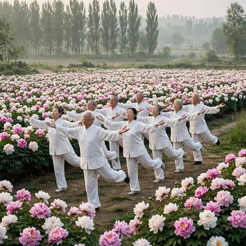
- 安徽省亳州市2011 第三批 · 新增项目官方页 →
- VI-64
- VI-65
- VI-66
迎罗汉
- 浙江省缙云县2011 第三批 · 新增项目官方页 →
- VI-67
掼牛
- 浙江省嘉兴市南湖区2011 第三批 · 新增项目官方页 →
- VI-68
高杆船技
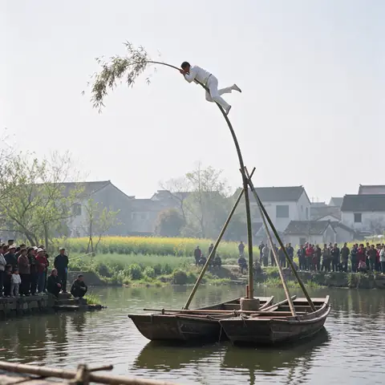
- 浙江省桐乡市2011 第三批 · 新增项目官方页 →
- VI-69
- VI-70
口技
- 北京市西城区2011 第三批 · 新增项目官方页 →
- VI-71
布鲁
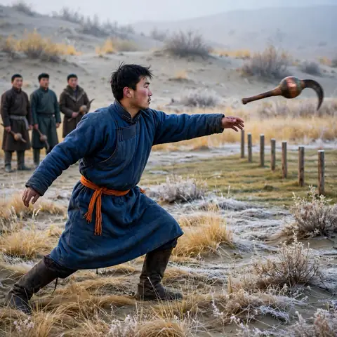
- 内蒙古自治区库伦旗2014 第四批 · 新增项目官方页 →
- VI-72
蒙古族驼球
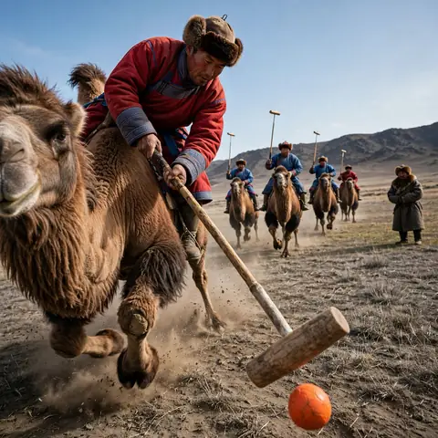
- 内蒙古自治区乌拉特后旗2014 第四批 · 新增项目官方页 →
- VI-73
通背拳
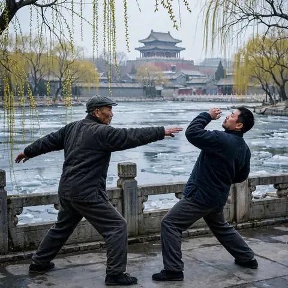
- 北京市西城区2014 第四批 · 新增项目官方页 →
- VI-74
戳脚
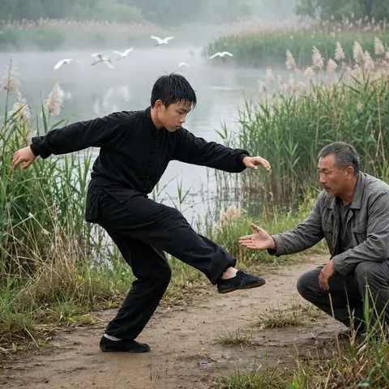
- 河北省衡水市桃城区2014 第四批 · 新增项目官方页 →
- VI-75
精武武术
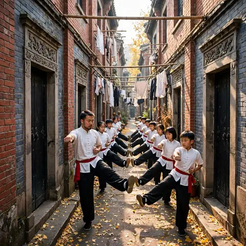
- 上海市虹口区2014 第四批 · 新增项目官方页 →
- VI-76
绵拳
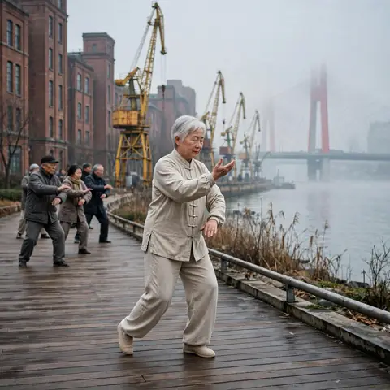
- 上海市杨浦区2014 第四批 · 新增项目官方页 →
- VI-77
- VI-78
井冈山全堂狮灯
- 江西省井冈山市2014 第四批 · 新增项目官方页 →
- VI-79
徐家拳
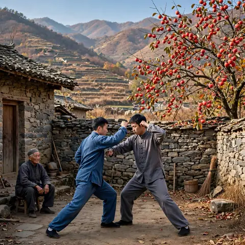
- 山东省新泰市2014 第四批 · 新增项目官方页 →
- VI-80
梅山武术
- 湖南省新化县2014 第四批 · 新增项目官方页 →
- VI-81
武汉杂技
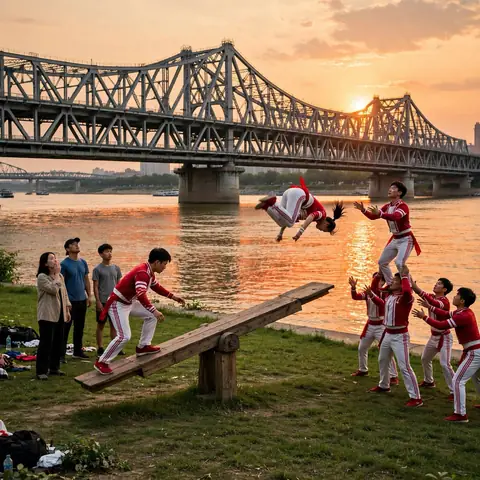
- 湖北省武汉市2014 第四批 · 新增项目官方页 →
- VI-82
- VI-83
藏棋
- 四川省阿坝藏族羌族自治州2021 第五批 · 新增项目官方页 →
- VI-84
曲棍球
- 曲棍球（维吾尔族曲棍球）新疆维吾尔自治区和田地区于田县2021 第五批 · 新增项目官方页 →
- VI-85
无极拳
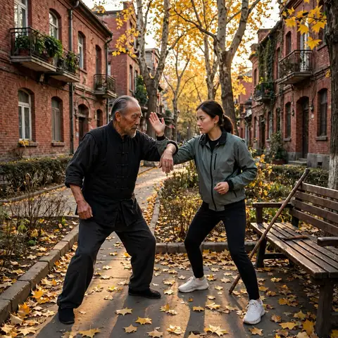
- 天津市东丽区2021 第五批 · 新增项目官方页 →
- VI-86
少北拳
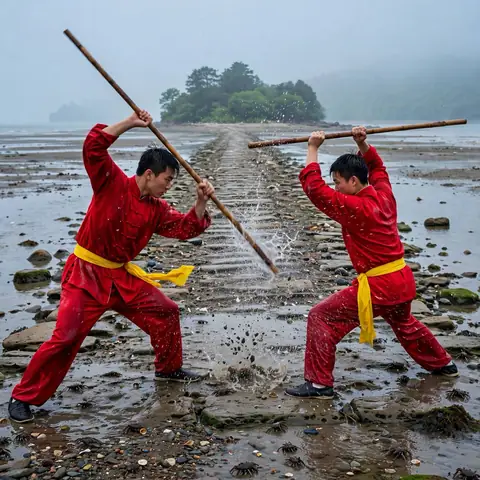
- 辽宁省锦州市2021 第五批 · 新增项目官方页 →
- VI-87
西凉掌
- 西凉掌（亳州晰扬掌）安徽省亳州市2021 第五批 · 新增项目官方页 →
- VI-88
六合拳
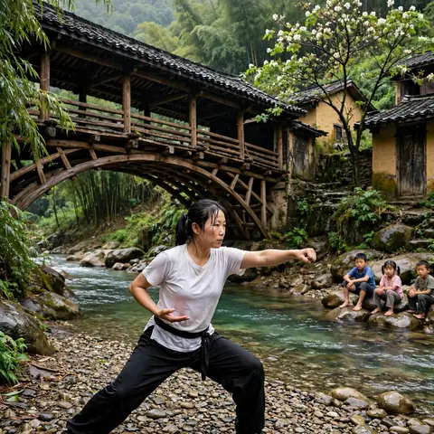
- 六合拳（福建六合门）福建省2021 第五批 · 新增项目官方页 →
- VI-89
巫家拳
- 湖南省湘潭市2021 第五批 · 新增项目官方页 →
- VI-90
岩鹰拳
- 湖南省邵阳市新宁县2021 第五批 · 新增项目官方页 →
- VI-91
莫家拳
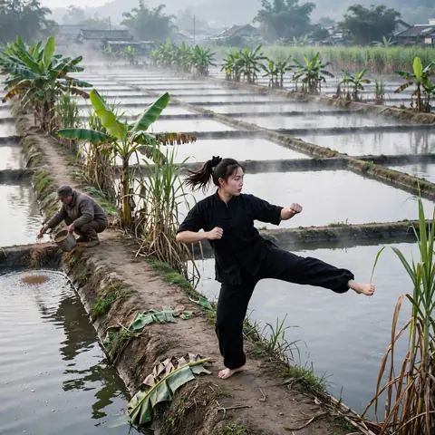
- 广东省2021 第五批 · 新增项目官方页 →
- VI-92
青萍剑
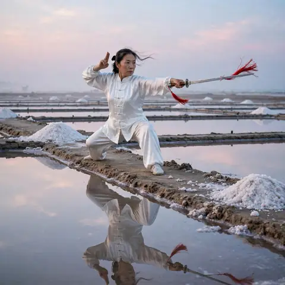
- 青萍剑（贾氏青萍剑）河北省沧州市黄骅市2021 第五批 · 新增项目官方页 →
- VI-93
易筋经
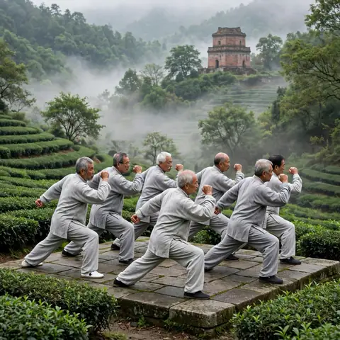
- 易筋经（天台山易筋经）浙江省台州市天台县2021 第五批 · 新增项目官方页 →
- VI-94
青城武术
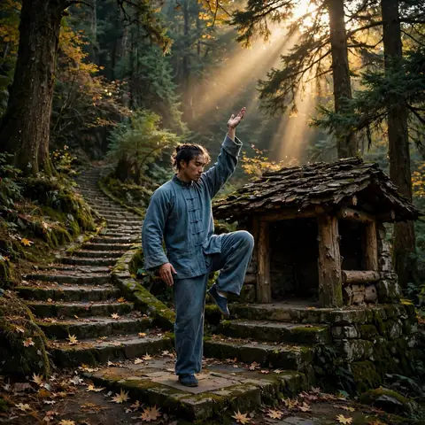
- 四川省成都市都江堰市2021 第五批 · 新增项目官方页 →
- VI-95
布依族武术
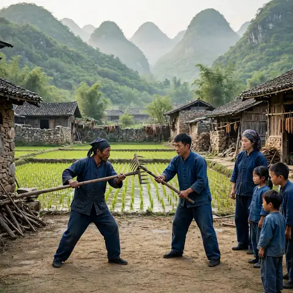
- 贵州省黔西南布依族苗族自治州安龙县2021 第五批 · 新增项目官方页 →
- VI-96
乌审走马竞技
- 内蒙古自治区鄂尔多斯市乌审旗2021 第五批 · 新增项目官方页 →
- VI-97
迎大旗
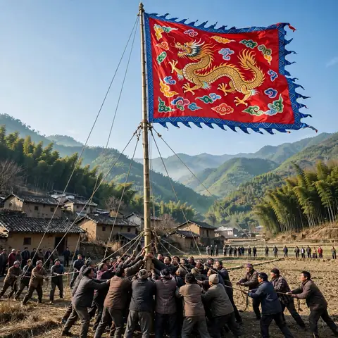
- 浙江省金华市磐安县2021 第五批 · 新增项目官方页 →
- VI-98
泉州刣狮
- 福建省泉州市石狮市2021 第五批 · 新增项目官方页 →
- VI-99
抢花炮
- 抢花炮（壮族抢花炮）广西壮族自治区南宁市邕宁区2021 第五批 · 新增项目官方页 →
- VI-100
滑竿
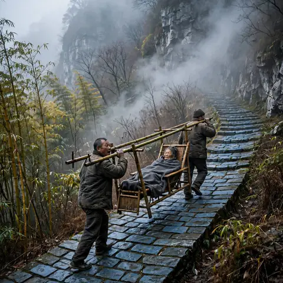
- 滑竿（华蓥山滑竿抬幺妹）四川省广安市2021 第五批 · 新增项目官方页 →
- VI-101
赤水独竹漂
- 贵州省遵义市赤水市2021 第五批 · 新增项目官方页 →
- VI-102
拔河
- 拔河（万人扯绳赛）甘肃省甘南藏族自治州临潭县2021 第五批 · 新增项目官方页 →
- VI-103
姑娘追
- 新疆维吾尔自治区阿勒泰地区青河县2021 第五批 · 新增项目官方页 →
- VI-104
朝鲜族尤茨
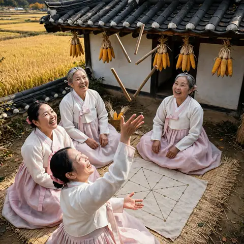
- 吉林省吉林市2021 第五批 · 新增项目官方页 →
- VI-105
打陀螺
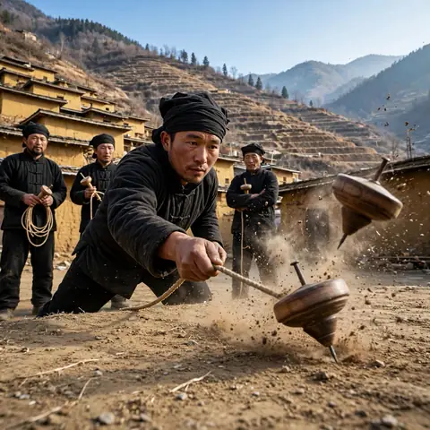
- 云南省2021 第五批 · 新增项目官方页 →
- VI-106
登杆
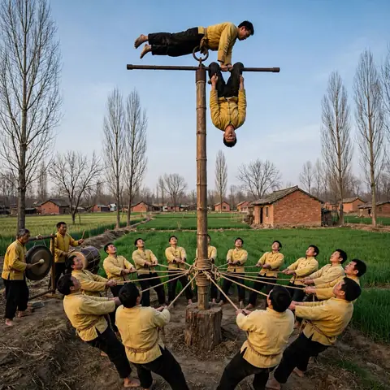
- 登杆（大六分村登杆）天津市静海区2021 第五批 · 新增项目官方页 →
- VI-107
飞叉
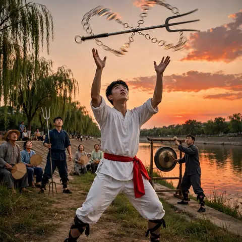
- 飞叉（永良飞叉）天津市武清区2021 第五批 · 新增项目官方页 →
- VI-108
临泉杂技
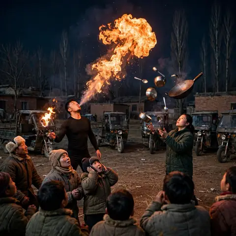
- 安徽省阜阳市临泉县2021 第五批 · 新增项目官方页 →
- VI-109
蹬技
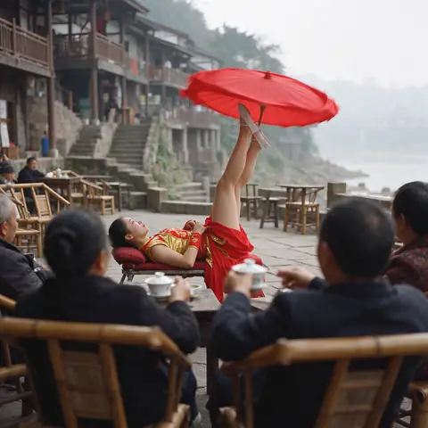
- 蹬技（重庆蹬技）重庆市2021 第五批 · 新增项目官方页 →
名录数据来源：中国非物质文化遗产网